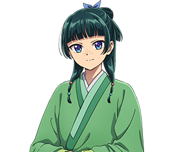

Maomao
A abordagem de Maomao à vida é extremamente prática, focada em aprender a sobreviver e prosperar conforme as exigências do ambiente. Raramente é enganada ou influenciada pelos outros, sendo uma das poucas pessoas a não se deixar afetar pela beleza e charme de Jinshi. Essa mentalidade permite que ela lide com situações que muitos considerariam assustadoras; por exemplo, encara seu sequestro como algo irritante, mas também como uma inevitabilidade de viver no Distrito da Luz Vermelha.